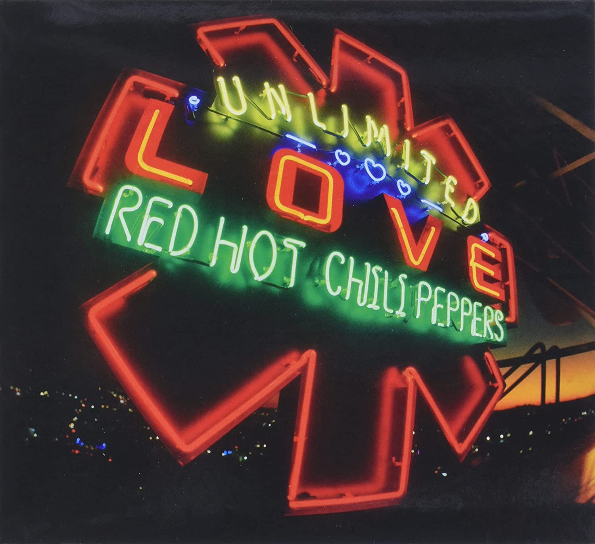
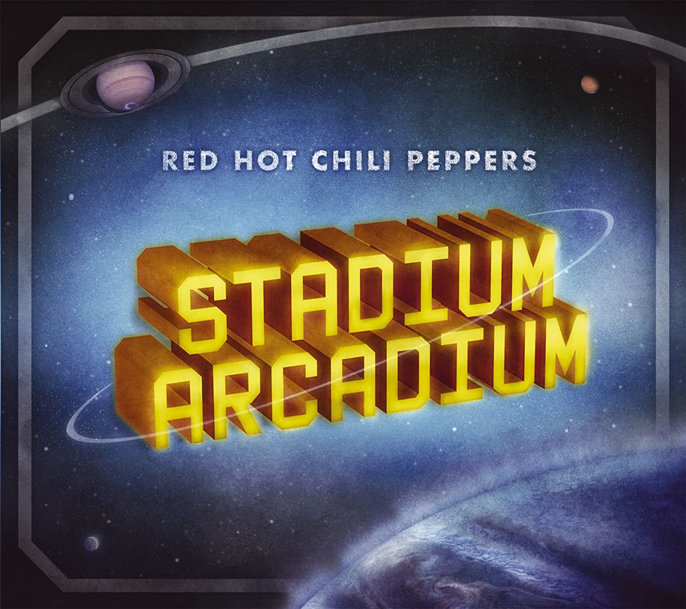
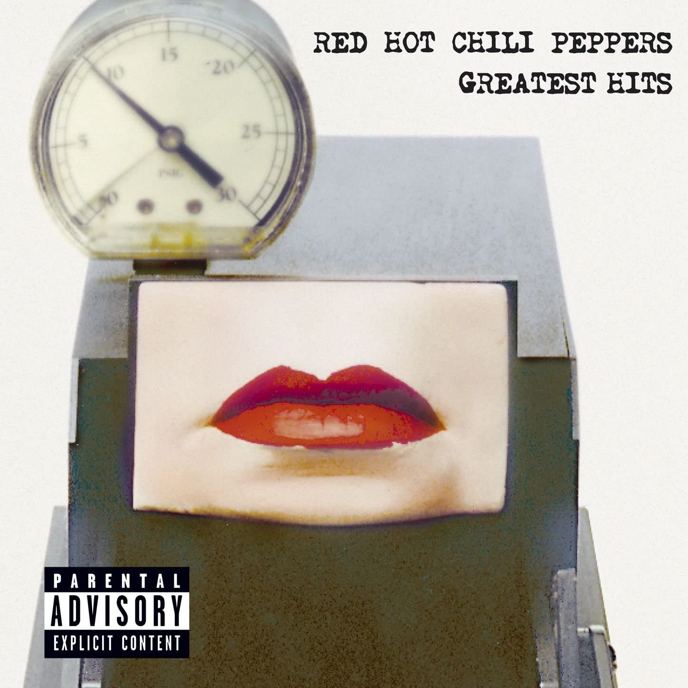
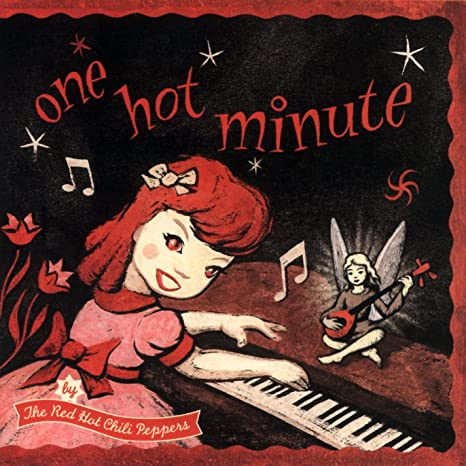
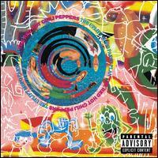
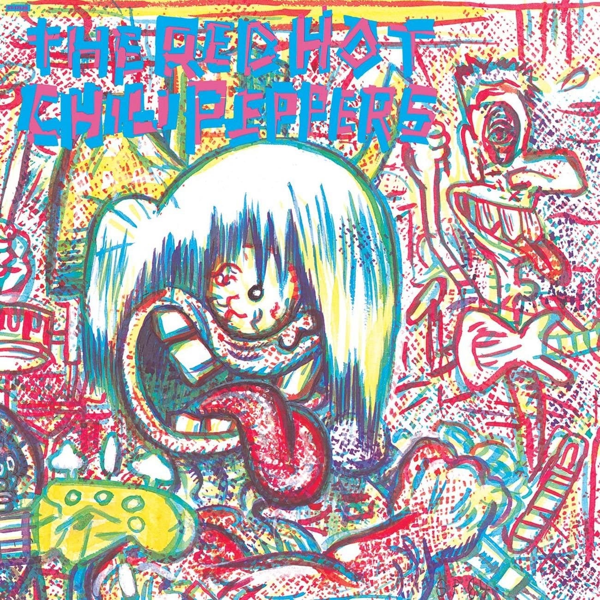

Return Of The Dream Canteen 2022
- 01. Tippa My Tongue
- 02. Peace and Love
- 03. Reach Out
- 04. Eddie
- 05. Fake as Fu@k
- 06. Bella
- 07. Roulette
- 08. My Cigarette
- 09. Afterlife
- 10. Shoot Me a Smile
- 11. Handful
- 12. The Drummer
- 13. Bag Of Grins
- 14. La La La La La La La La
- 15. Copperbelly
- 16. Carry Me Home
- 17. In The Snow
(Japan Bonus)
- 18. The Shape I'm Takin'

Unlimited Love 2022
- 01. Black Summer
- 02. Here Ever After
- 03. Aquatic Mouth Dance
- 04. Not The One
- 05. Poster Child
- 06. The Great Apes
- 07. It's Only Natural
- 08. She's a Lover
- 09. These Are The Ways
- 10. Whatchu Thinkin'
- 11. Bastards Of Light
- 12. White Braids & Pillow Chair
- 13. One Way Traffic
- 14. Veronica
- 15. Let 'Em Cry
- 16. The Heavy Wing
- 17. Tangelo
(Japan Bonus)
- 18. Nerve Flip

The Getaway 2016
- 01. The Getaway
- 02. Dark Necessities
- 03. We Turn Red
- 04. The Longest Wave
- 05. Goodbye Angels
- 06. Sick Love
- 07. Go Robot
- 08. Feasting On The Flowers
- 09. Detroit
- 10. This Ticonderoga
- 11. Encore
- 12. The Hunter
- 13. Dreams Of a Samurai

I'm With You 2011
- 01. Monarchy of Roses
- 02. Factory Of Faith
- 03. Brendan's Death Song
- 04. Ethiopia
- 05. Annie Wants a Baby
- 06. Look Around
- 07. The Adventures Of Rain Dance Maggie
- 08. Did I Let You Know?
- 09. Goodbye Hooray
- 10. Happiness Loves Company
- 11. Police Station
- 12. Even You Brutus?
- 13. Meet Me at the Corner
- 14. Dance, Dance, Dance

Stadium Arcadium 2006
Jupiter
- 01. Dani California
- 02. Snow (Hey Oh)
- 03. Charlie
- 04. Stadium Arcadium
- 05. Hump de Bump
- 06. She's Only 18
- 07. Slow Cheetah
- 08. Torture Me
- 09. Strip My Mind
- 10. Especially in Michigan
- 11. Warlocks
- 12. C'mon Girl
- 13. Wet Sand
- 14. Hey
Mars
- 01. Desecration Smile
- 02. Tell Me Baby
- 03. Hard to Concentrate
- 04. 21st Century
- 05. She Looks to Me
- 06. Readymade
- 07. If
- 08. Make You Feel Better
- 09. Animal Bar
- 10. So Much I
- 11. Storm in a Teacup
- 12. We Believe
- 13. Turn It Again
- 14. Death of a Martian

Greatest Hits 2003
- 01. Higher Ground
- 02. Give It Away
- 03. Under The Bridge
- 04. Suck My Kiss
- 05. Breaking The Girl
- 06. Soul To Squeeze
- 07. My Friends
- 08. Scar Tissue
- 09. Otherside
- 10. Californication
- 11. Parallel Universe
- 12. Road Trippin
- 13. By The Way
- 14. Universally Speaking
- 15. Fortune Faded
- 16. Save the Population

By The Way 2002
- 01. By The Way
- 02. Universally Speaking
- 03. This Is The Place
- 04. Dosed
- 05. Don't Forget Me
- 06. The Zephyr Me
- 07. Can't Stop
- 08. I Could Die For You
- 09. Midnight
- 10. Throw Away Your Television
- 11. Cabron
- 12. Tear
- 13. On Mercury
- 14. Minor Thing
- 15. Warm Tape
- 16. Venice Queen
Californication 1999
- 01. Around The World
- 02. Parallel Universe
- 03. Scar Tissue
- 04. Otherside
- 05. Get On Top
- 06. Californication
- 07. Easity
- 08. Porcelain
- 09. Emit Remmus
- 10. I Like Dirt
- 11. This Velvet Glove
- 12. Savior
- 13. Purple Stain
- 14. Right On Time
- 15. Road Trippin

One Hot Minute 1995
- 01. Warped
- 02. Aeroplane
- 03. Deep Kick
- 04. My Friends
- 05. Coffee Shop
- 06. Pea
- 07. One Big
- 08. Walkabout
- 09. Tearjerker
- 10. One Hot Minute
- 11. Falling Into Grace
- 12. Shaloow Be Thy Game
- 13. Transeending
What Hits!? 1992
- 01. Higher Ground
- 02. Fight Like A Brave
- 03. Behind The Sun
- 04. Me And My Friends
- 05. Backwoods
- 06. True Men Don t Kill Coyotes
- 07. Fire
- 08. Get Up And Junp
- 09. Knock Me Down
- 10. Under The Bridge
- 11. Show Me Your Soul
- 12. If You Want Me To Stay
- 13. Hollywood
- 14. Jungle Man
- 15. The Brothers Cup
- 16. Taste The Pain
- 17. Catholic School Girls Rule
- 18. Johnny Kick A Role In The Sky

Blood Sugar Sex Magik 1991
- 01. The Power Of Equality
- 02. If You Have To Ask
- 03. Breaking The Girl
- 04. Funky Monks
- 05. Suck My Kiss
- 06. I Could Have Lied
- 07. Mellowship Slinky In B Major
- 08. The Righteous & The Wicked
- 09. Give It Away
- 10. Blood Sugar Sex Magik
- 11. Under The Bridge
- 12. Naked In The Rain
- 13. Apache Rose Peacock
- 14. The Greeting Song
- 15. My Lovely Man
- 16. Sir Psycho Sexy
- 17. They're Red Hot
Mother's Milk 1989
- 01. Good Time Boys
- 02. Higher Ground
- 03. Subway To Venus
- 04. Magic Johnson
- 05. Nobody Weird Like Me
- 06. Knock Me Down
- 07. Taste The Pain
- 08. Stone Cold Bush
- 09. Fire
- 10. Pretty Little Ditty
- 11. Punk Rock Classic
- 12. Sexsy Mexican Maid
- 13. Johnny Kick A Hole In The Sky
- 14. Song That Made Us What We Are Today
- 15. Knock Me Down
- 16. Sexy Mexican Maid
- 17. Salute To Kareem
- 18. Castles Made Of Sand
- 19. Crosstown Traffic

The Uplift Mofo Party Plan 1988
- 01. Fight Like A Brave
- 02. Funky Crime
- 03. Me And My Friends
- 04. Backwoods
- 05. Skinny Sweaty Man
- 06. Behind The Sun
- 07. Subterranean Homesick Blues
- 08. Special Secret Song Inside
- 09. No Chump Love Sucker
- 10. Walkin' On Down The Road
- 11. Love Trilogy
- 12. Organic Anti-Beat Box Band

Freaky Styley 1985
- 01. Jungle Man
- 02. Hollywood
- 03. American Ghost Dance
- 04. If You Want Me To Stay
- 05. Nevermind
- 06. Freaky Styley
- 07. Blackeyed Blonde
- 08. The Brother's Cup
- 09. Battle Ship
- 10. Lovin And Touchin
- 11. Catholic School Girls Rule
- 12. Sex Rap
- 13. Thisty Dirty Birds Yertle The Turtle

The Red Hot Chili Peppers 1984
- 01. True Men Don t Kill Coyotes
- 02. Baby Appeal
- 03. Buckle Down
- 04. Get Up And Jump
- 05. Why Don t You Love Me
- 06. Green Heaven
- 07. Mommy Where s Daddy
- 08. Out In L.A.
- 09. Police Helicopter
- 10. You Always Sing
- 11. Grand Pappy Du Plenty